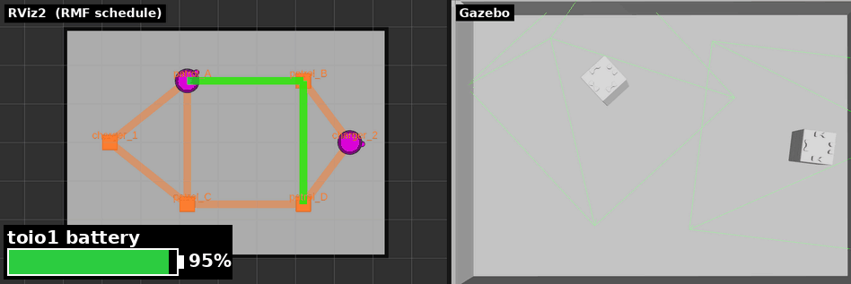

章7: バッテリと自動充電(ChargeBattery)
← 前章: 交通調停 | 目次 | 次章: 搬送とワークセル →
狙い
- RMFがロボットのバッテリを見張り、尽きる前に勝手に充電へ帰す仕組みを知る
- 明示的に投げるタスクではないChargeBattery が、どんな条件で自動計画されるかをフリート設定から理解する
- 実行中タスクをキャンセルする操作を覚える(充電・帰還と絡む)
入札(章5)・交通調停(章6)に続く、フリートの自己管理の層。
ChargeBatteryは「投げない」タスク
これまでのタスク(go_to_place / patrol)はCLIから投げた。ChargeBatteryは違い、RMFが「このままだとバッテリが足りない」と判断したときに自動で計画する。運用者が忘れていても、ロボットが自分で充電に帰る ── これがフリートを長時間ほったらかせる理由。
判断はフリート設定 toio_fleet_config_<mat>.yaml の値で決まる:
| パラメータ | 値 | 意味 |
|---|---|---|
recharge_threshold |
0.2 |
残量がこれを下回る見込みになると充電を計画 |
recharge_soc |
1.0 |
充電の目標残量(満充電) |
account_for_battery_drain |
true |
見積もり時にバッテリ消費を織り込む |
finishing_request |
"charge" |
タスク完了後もチャージャーへ帰す |
account_for_battery_drain: true が効いているので、RMFは入札の段階から「このタスクを最後までやったらバッテリはいくつになる?」を計算している。足りなくなる見込みなら、先に充電を挟む。
状態遷移で捉える
stateDiagram-v2
[*] --> idle
idle: 待機（charger で待機・充電）
run: 実行中（patrol / delivery などを実行）
recharge: 充電帰還（ChargeBattery を自動計画）
idle --> run: タスク受注
run --> idle: 完了時 finishing_request（charge）で帰還
run --> recharge: 残量が recharge_threshold を下回る見込み
recharge --> idle: 自機の charger へ帰り充電待機図の詳細版はdocs/TASKS.mdのChargeBatteryにある。
動かす・観察する
1. バッテリの現在値を見る
各ロボットの battery_percent は /fleet_states に入っている:
ros2 topic echo /fleet_states --once
Important
シミュレーションではこの値は100%に固定され、放電も充電もしない。toioのアダプタは実機の /toioN/toio/battery_state を残量の入力にしており、simにはそれが無いためだ。
フリート設定の account_for_battery_drain は、タスクの見積り(入札コスト)には効くが、報告される残量そのものは動かさない。実機ではこの値がキューブの実測(10%刻みの離散値)由来になり、25分のタスク走行で90% → 70%ほど減る。実機での確認は章14。
2. 既定のsimではChargeBatteryは発火しない ── publish_battery で見る
上の状態遷移の「実行中 → 充電帰還」は、残量が recharge_threshold を下回る見込みになると起きる。しかしsimでは残量が100%に張り付いたままなので、既定の起動ではChargeBatteryは発火しない(このリポジトリで実測確認)。patrolを30周させても battery_percent は100.0%のまま。recharge_threshold を0.9に上げ、ambient_system.power を100倍にしても結果は同じで、報告残量が動かない以上RMFは「下回る見込み」と判断できず、判断できなければ充電も挟まない。アダプタのログにも The current battery percentage is 100.0% ... charging at an average rate of 0.0 %/hour と出る。
実機ではキューブの battery_state が実際に放電するので、残量が20%以下に落ちるとChargeBatteryが発火する(toio_rmf_bringup#50)。手順は章14とissue #35にある。
Tip
simでもChargeBatteryを見たいときは、toio_gazeboのオプトインのsimバッテリを有効にする(publish_battery:=true)。走行でSoC(State of Charge、残量)が減り、自機チャージャーで充電されるので、「残量低下 → ChargeBattery → チャージャーへ帰還 → 充電 → 復帰」を通しで観察できる。デモを短時間で見たいときは battery_discharge_rate を上げる:
ros2 launch toio_rmf_bringup toio_rmf.launch.py mat:=a3 run_sim:=true \
use_sim_time:=true publish_battery:=true battery_discharge_rate:=0.02 \
battery_quantize_steps:=0
報告される残量は既定で10%刻み(実機のキューブに合わせている)。下のGIFのように滑らかなバーで見たいときは battery_quantize_steps:=0 を付ける。仕組みと引数はtoio_gazeboの「Battery and Open-RMF ChargeBattery」。

publish_battery:=true(放電を速めた例)。patrol中に battery_percent(左下のバー)が減る。低下するとチャージャーへ帰り、CHARGINGで100%まで回復してからタスクに戻る。simで再現した充電まわりの一連。既定はOFFなので、付けなければ残量は100%固定のまま。
3. 完了後の自動帰還を見る(finishing_request)
短いpatrolでも、完了後にチャージャーへ帰るのは finishing_request: "charge" の働き。章4で見た「勝手に帰る」挙動の正体がこれ。ChargeBatteryの「途中で帰る」と、finishing_requestの「終わったら帰る」は別トリガだが、どちらも「充電待機へ戻す」点で連続している。
キャンセルと帰還
実行中のタスクは途中で取り消せる。取り消したロボットは finishing_request に従ってチャージャーへ戻る:
ros2 run rmf_demos_tasks cancel_task -id <task_id>
task_idは投入時のCLI出力、またはrmf_task_dispatcherのログに出るcancel_taskは--use_sim_timeを受け付けない(-idのみ)。このチュートリアルで唯一--use_sim_timeを付けないコマンド。cancel_taskは実行後プロンプトに戻らず、止まったように見える。これはrmf_demos_tasksの仕様で、キャンセル要求をpublishした後にそのまま待受へ入るため。キャンセル自体は送信済みなので、Ctrl-Cで抜けてよい。抜けたあとロボットがチャージャーへ戻れば成功。(詰まったらTROUBLESHOOTING.mdも参照)
試すなら、長いpatrolを投げて途中で cancel_task -id <task_id> し、ロボットが巡回をやめてチャージャーへ帰るのを確認する。
理解する
- バッテリ管理はフリートの自律性の要。入札で「誰が」、交通調停で「どう道を分けるか」を見てきたが、ChargeBatteryはいつ休むかを自分で決める層。この3つが揃うと、運用者は個々のロボットの世話をしなくてよくなる。
- 見積もりにバッテリが入るので、章5の入札と繋がっている。残量の少ないロボットは「やったら足りなくなる」と見積もられ、入札で不利になったり、受注前に充電を挟んだりする。入札・充電・タスク実行は独立でなく連動している。
- finishing_requestとChargeBatteryは別物。前者は「タスク完了後の片付けポリシー」、後者は「実行中に残量が危ういときの割り込み」。混同しやすいが、トリガが違う。
確認課題
/fleet_statesのbattery_percentをechoし、長いpatrol中も100%から動かないことを確認する(simの制約。上のImportantの囲みの裏取り)。「なぜsimではChargeBatteryが発火しないか」を自分の言葉で説明できるか。- patrol完了後、ロボットが
finishing_request: "charge"で自機のチャージャーへ帰るのを確認する(これはsimでも動く充電まわりの挙動)。finishing_requestをnothingに変えて起動し直すと帰らなくなることも試す。確認後はchargeに戻すこと ──nothingのままだと、以降の章の「完了後に帰還する」前提が崩れる。 - 実行中タスクを
cancel_taskで取り消し、ロボットがチャージャーへ戻ることを確認する。キャンセルとfinishing_requestの関係を説明できるか。
自己管理まで見たら、次は「移動」以外のタスク ── 荷役(delivery)へ。ロボットだけでなくワークセルという別の登場人物が出てくる。
← 前章: 交通調停 | 目次 | 次章: 搬送とワークセル →